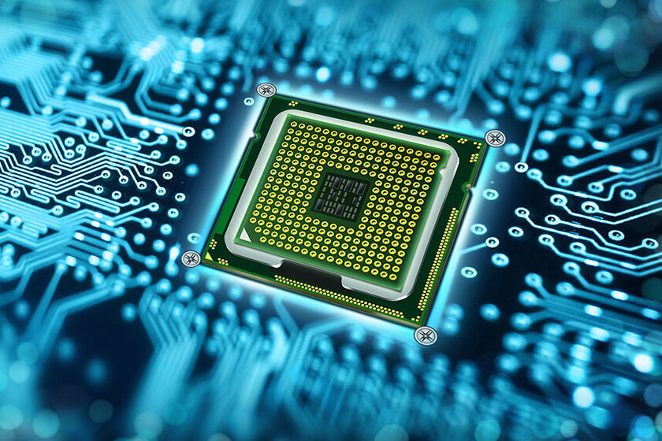

3.1 Chip set.
 Un chipset es el conjunto de circuitos integrados diseñados con base en la arquitectura de un
procesador (en algunos casos, diseñados como parte integral de esa arquitectura), permitiendo que
ese tipo de procesadores funcionen en una placa base. Sirven de puente de comunicación con el resto
de componentes de la placa, como son la memoria, las tarjetas de expansión, los puertos USB, ratón,
teclado, etc.
Las placas base modernas suelen incluir dos integrados, denominados puente norte y puente sur, y
suelen ser los circuitos integrados más grandes después de la GPU y el microprocesador. Las últimas
placa base carecen de puente norte, ya que los procesadores de última generación lo llevan
integrado.
Un chipset es el conjunto de circuitos integrados diseñados con base en la arquitectura de un
procesador (en algunos casos, diseñados como parte integral de esa arquitectura), permitiendo que
ese tipo de procesadores funcionen en una placa base. Sirven de puente de comunicación con el resto
de componentes de la placa, como son la memoria, las tarjetas de expansión, los puertos USB, ratón,
teclado, etc.
Las placas base modernas suelen incluir dos integrados, denominados puente norte y puente sur, y
suelen ser los circuitos integrados más grandes después de la GPU y el microprocesador. Las últimas
placa base carecen de puente norte, ya que los procesadores de última generación lo llevan
integrado.
Funcionamiento:
El chipset es el que hace posible que la placa base funcione como eje del sistema, dando soporte a
varios componentes e interconectándolos de forma que se comuniquen entre ellos haciendo uso de
diversos buses.
Es uno de los pocos elementos que tiene conexión directa con el procesador, gestiona la mayor parte
de la información que entra y sale por el bus principal del procesador, del sistema de vídeo y
muchas veces de la memoria RAM. En el caso de los computadores PC, es un esquema de arquitectura
abierta que establece modularidad: el chipset debe tener interfaces estándar para los demás
dispositivos.
Esto permite escoger entre varios dispositivos estándar, por ejemplo, en el caso de los buses de
expansión, algunas tarjetas madre pueden tener bus PCI-Express y soportar diversos tipos de tarjetas
de distintos anchos de bus (1x, 8x, 16x).
3.1.1 Unidad de procesamiento.
 La unidad central de procesamiento (siglas en inglés Central Processing Unit) es el hardware dentro de una computadora u otros dispositivos programables. Su trabajo es interpretar las instrucciones de un programa informático mediante la realización de las operaciones básicas aritméticas, lógicas y externas (provenientes de la unidad de entrada/salida). Su diseño y avance ha variado notablemente desde su creación, aumentando su eficiencia y potencia, y reduciendo aspectos como el consumo de energía y el costo. Los componentes de la CPU son: Unidad aritmético lógica (ALU): Realiza operaciones aritméticas y lógicas. Unidad de control (CU): Dirige el tráfico de información entre los registros de la CPU y conecta con la ALU las instrucciones extraídas de la memoria. Registros internos: No accesibles (de instrucción, de bus de datos y bus de dirección) y accesibles de uso específico (contador programa, puntero pila, acumulador, flags, etc.) o de uso general.